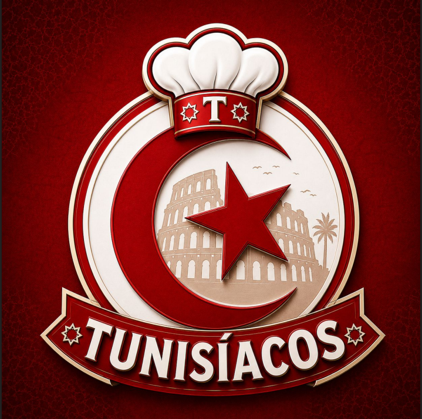
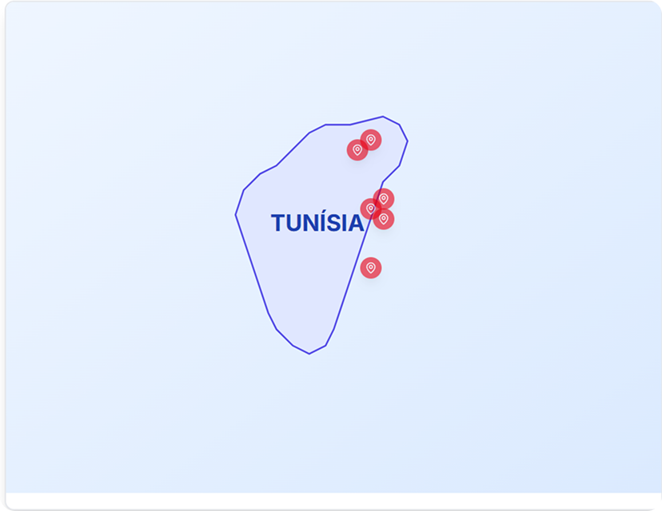
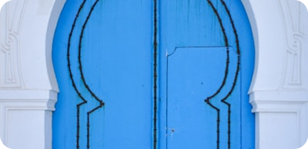
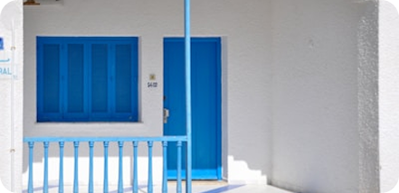
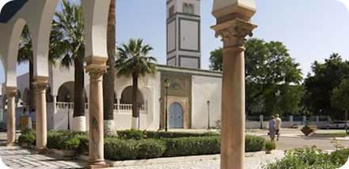
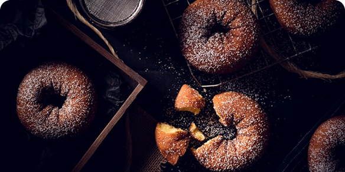

Uma jornada completa pelos aspectos culturais, econômicos, históricos e tecnológicos de um dos países mais fascinantes do Mediterrâneo.
Um trabalho multidisciplinar que conecta conhecimentos de diferentes áreas do saber, desenvolvendo competências essenciais para a formação acadêmica e pessoal dos alunos.
Investigação profunda sobre aspectos culturais, históricos e sociais da Tunísia.
Exploração da rica herança cultural, gastronomia e tradições tunisianas.
Análise do desenvolvimento tecnológico e inovação no país mediterrâneo.
Desenvolvimento de ideias de negócios inspiradas na economia tunisiana.
Descubra as principais cidades tunisianas, suas curiosidades e atrações turísticas. Clique nos marcadores para explorar cada região.

Uma semana dedicada a vivenciar e compartilhar a rica cultura tunisiana através de experiências imersivas e apresentações envolventes.

Degustação de pratos típicos tunisianos
Cuscuz, tajine, brik e doces tradicionais
Apresentação de músicas e danças tradicionais
Ritmos mediterrâneos e instrumentos árabes
Exposição sobre a rica história tunisiana
De Cartago aos dias atuaisTransformando tradição em oportunidade através do Bambalouni, um doce típico tunisiano que combina cultura, gastronomia e potencial de mercado.

Doce tradicional tunisiano preparado com masa fermentada, frita até atingir textura crocante por fora e macia por dentro, finalizada com açúcar cristal.
Preparada seguindo técnicas centenárias tunisianas.
Experiência gastronômica única e memorável.
Inspirado nas ruas históricas de Sidi Bou Said.
Produto diferenciado para eventos e cafeterias.
Resultados das pesquisas desenvolvidas sobre a Tunísia, reunindo dados geográficos, econômicos, tecnológicos, educacionais e ambientais.
Acompanhe as principais etapas do desenvolvimento do Projeto Integrador, desde a escolha do país até a apresentação final.
Definição da Tunísia como tema principal do projeto.
Levantamento de dados históricos, culturais e econômicos.
Pesquisa aprofundada em diversas áreas do conhecimento.
Criação de banners, apresentações, maquetes e conteúdos digitais.
Organização dos eventos e ensaios finais.
Semana Cultural, Feira do Conhecimento e Feira de Empreendedorismo.